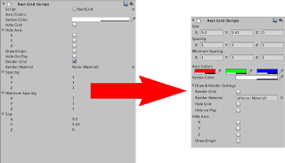

A new inspector
Category: progress
Tags: old-blog
Well, I wanted to do this sooner or later anyway, so I made a custom editor for the rectangular grid. Before this I was using the default inspector panel:

So, why am I doing GUI stuff if I'm supposed to work on the rendering? Well, as
I said I need to clean up the code, which involves looping through two custom
classes of mine, ColorVector3 and BoolVector3. If you used Vector3 you
know you can access values using something like myVector.x, but you can also
use an index instead: myVector[0]
I wanted to have both in my two classes so I could loop through them in one go rather than write a special case for each entry and provide an intuitive syntax for users. The solution was using an indexer, setters and getters. They all work fine in code, but I cannot get getters and setter to display in the inspector and manipulating the entries directly could break things. The solution was writing my own inspector from scratch.
Aside from now being able to provide a safe and clean way to set colors and
toggle axes the new inspector looks cleaner and the attributes are sorted in a
way that makes more sense, rather than the way the class is built. I'm still
not satisfied with some parts, the axis colours don't have labels and the hide
axis flags should be on the same line, like the Vector3 field. However, if I
force them on one line or add labels to the colour fields the space for the
labels is so large that the controls start overlapping, so it looks even worse
than before.
Anyway, it does look better now and gives me the code improvements I need for clean rendering, so all in all it's a success.